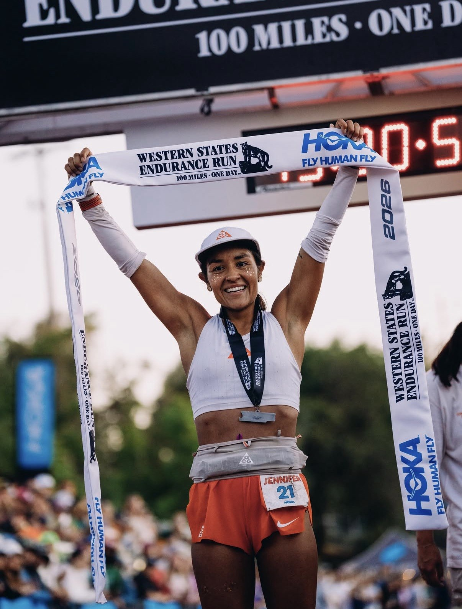
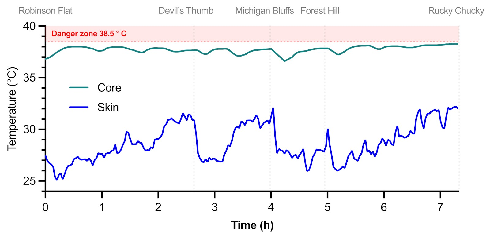
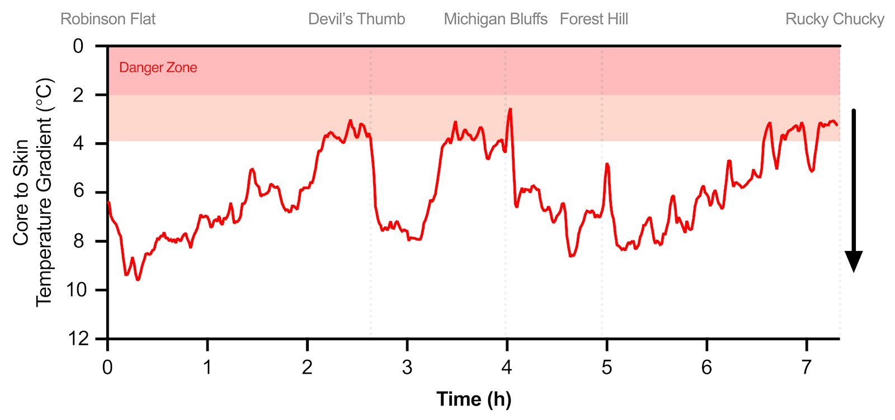
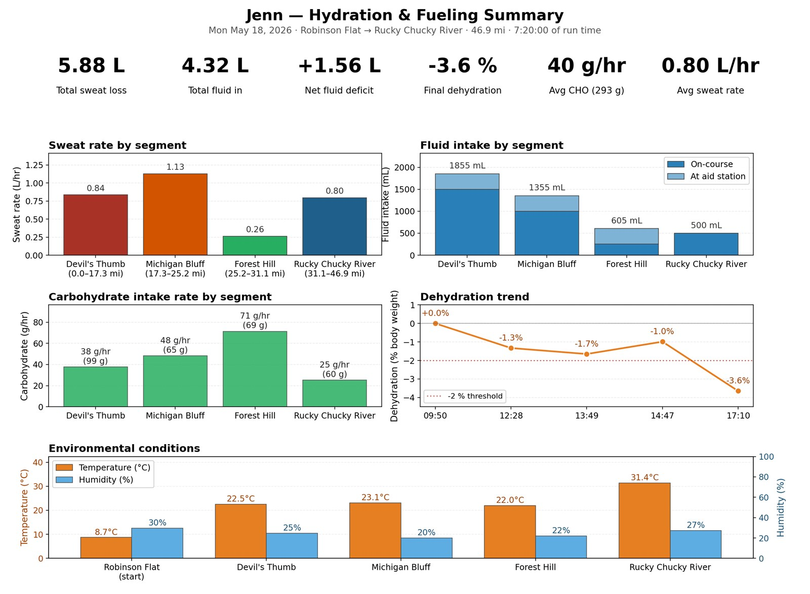

Jenn crossed the line at Placer High in 15:28:05, taking down Courtney Dauwalter's 2023 course mark by 1 minute, 28 seconds. She took the lead on the climb to Devil's Thumb and never gave it back, closing the final track lap at a 5:20 mile pace.
The answer came in her pace. From a 36-second cushion at Robie Point to a course record by 1:28 just over a mile later, Jenn tapped the same self-belief she had trusted for the previous 15 hours — and turned a possible win into a definitive one.
Sources: Runner's World · TrainRight (John Fitzgerald) · Trail Runner Magazine
Jennifer Lichter is a professional trail and ultra runner based in Missoula, Montana. Born in Bogotá, Colombia and adopted at nine into a family in La Crosse, Wisconsin, she found running in middle school and endurance sport in her twenties. In 2021 she won the Run the Rut 50K in her ultra debut. By 2025 she was setting course records at Broken Arrow 46K and Speedgoat 50K.
She stepped up to 100 miles for the first time at Western States 2026. She won it — and reset the course record while doing it.
On Monday, May 18, 2026 — roughly five weeks before race day — the API team traveled to Auburn, California to support Jenn on the biggest day of her training camp: a ~50-mile preview from Robinson Flat to Rucky Chucky River covering the middle sections of the Western States course.
In coordination with her coach, John Fitzgerald (CTS), the API team offered custom support in three areas that would matter most on race day — and in the humid canyons in between:
Four checkpoints: Devil's Thumb · Michigan Bluff · Foresthill · Rucky Chucky River. One pre-run kit-up at Robinson Flat, one final weigh-in at the river. Jenn moved with intention through the aid stations to keep the day race-realistic while allowing the team enough time to collect what they came for.
Over 7 hours and 20 minutes of running, ambient temperature climbed from 8.7°C at Robinson Flat to 31.4°C at Rucky Chucky. Jenn's core temperature stayed calm — hovering between 37 and 38.3°C, well under the 38.5°C threshold we watch as an early caution line.

The story worth watching is underneath that: the core-to-skin gradient. That gap is how the body dumps heat — the wider the gradient, the easier heat dissipation. Early in the day, the gradient was healthy (8–10°C). As she pushed into the exposed section from Foresthill down to the river, ambient temperatures climbed into the low 30s and the gradient compressed toward 4–5°C — approaching the range where cooling becomes work.

At Foresthill — with the gradient tightening and the hottest, most exposed stretch of the day still ahead — the team took proactive cooling measures before she left the checkpoint: water on her body and ice around her neck. Not a reaction to a core-temp alarm, a pre-emptive intervention driven by the gradient trend.
The sweat patches applied at Robinson Flat came off at Devil's Thumb. While Jenn ran the next section to Michigan Bluff, the team analyzed them on the roadside. The results came back on the lower end of the range: 500 and 560 ppm sodium (approximately mg per liter of sweat).
When Jenn came through Michigan Bluff, she flagged something separately: GI discomfort. She was alternating one bottle of water with one bottle of Precision Rapid Hydration — a high-sodium formulation — and she had a feeling the sodium load was contributing. Two pieces of information landed at the same checkpoint:
This is where field testing pays off. Because API team scientists were on the course with the sweat patches and the analyzer, the objective sodium number was in the team's hands at the exact checkpoint Jenn's own subjective signal came in. Two data streams. One conversation. Athlete and Nike Sport Research Lab making a shared, real-time decision on performance.
Together, we backed off the high-sodium bottle for the remainder of the day. By Foresthill she confirmed her GI discomfort had resolved, and she headed into the hottest, most exposed section of the day with more room to work with.
Continuous measurement of body mass, fluid intake, sweat rate, carbohydrate intake, and environmental conditions across all four segments produced the training day's fingerprint.

The final 15-mile push from Foresthill to Rucky Chucky was the hardest segment of the day: +9°C jump in ambient temperature, 1.11 L/hr sweat rate, only 25 g/hr of carbohydrate, and the largest body-mass drop of the run. It also happened to be the most useful segment we captured — the closest match to what race day would ask of her.
In the follow-up with Jenn and John Fitzgerald, three specific recommendations came out of the day — each pointing at the pieces that would matter most on race day:
On June 27, Jenn ran the race by feel — the same way she has always run — but into a plan the whole team had helped her build. Three days before the start she caught a stomach bug, and per her coach's write-up, the pivot for race-day fueling turned into a surprisingly low-tech Plan B: Wonder Bread soaked in Coca-Cola.
She took the lead on the climb to Devil's Thumb — the exact section her coach had asked her to run three separate times during the training camp. From there she extended, closed the final canyons cleanly, and came into Robie Point at mile 98.9 with a 36-second cushion on the course record.
The final track lap: 5:20 pace. Course record: -1:28. Body: doing what the training had prepared it to do.
Talking on the Singletrack Podcast in the 2026 Western States 100 pre-race interview, Jenn returned again and again to the May 18 course-preview day — the day the API team spent with her on the Western States course. She had captioned her Strava post from that day “big magic.” In her own words, this is why:
Jenn ran the majority of Western States in a Nike ACG prototype — a lighter, faster take on the Ultrafly lineage that our team on the ground has been calling the "Kigerfly." After the deep river crossing in the back half of the course, she swapped into the production Nike ACG Ultrafly 2 for the final push to Auburn.
The shoe story wasn't a side plot on this day. It was the prototype's biggest test yet — a 100-mile debut, in a course-record run, on the feet of the woman who won it.
Reference: Trail Runner Magazine — Fastest Shoes at the 2026 Western States 100.
The value of a course-preview day is not any single metric. It's the alignment that happens when the athlete, the coach, and the API team all look at the same picture at the same time. Sweat sodium alone doesn't tell you to change the bottle. GI discomfort alone doesn't tell you which lever to pull. Together, in real time, they do.